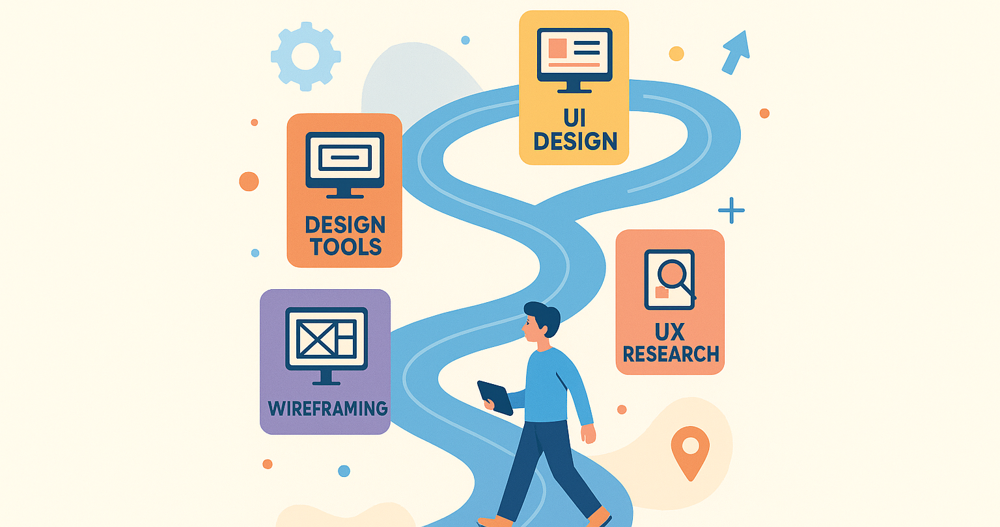

Roadmap Belajar UI/UX Design
Pondasi Dasar & Prinsip, Proses UX Inti, Visual & Interaksi dan Pengujian, Iterasi, & Profesionalisme.
Pembahasan materi UI/UX Design
Pondasi Dasar & Prinsip, Proses UX Inti, Visual & Interaksi dan Pengujian, Iterasi, & Profesionalisme.
Pembahasan Materi Front-end Development